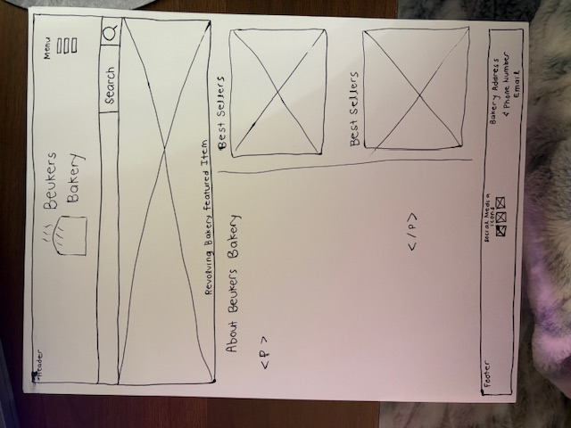
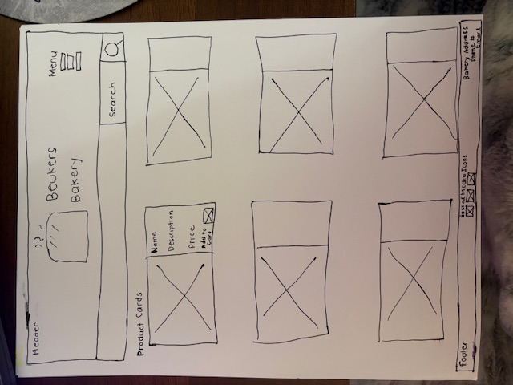
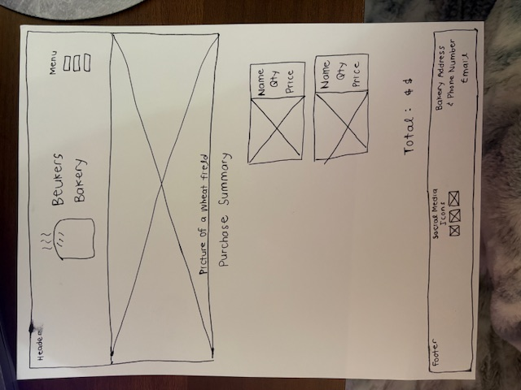

Overview
Purpose
The purpose of this website is to advertise homemade bakery products and allow local customers to browse breads, search products, and add items to a cart for purchase. The website will help customers easily see available products, prices, and descriptions before placing orders for local pickup.
Audience
The audience for this particular website would be people located in Cache Valley Utah specifically who are interested in purchasing locally made goods rather than purchasing store-bought breads.
Dynamic elements
I will create a products array in JavaScript, then render them with a template function just like we used for the recipe website. I will also implement a search function in JavaScript. I will create buttons to filter the types of bread. Examples could include: sourdough, whole wheat, sweet, gluten-free, seasonal. Like the recipe website, I will also create a sort function. This will sort the products by price from low to high. Then JavaScript will be used for the shopping cart. When items are added, it will store them in an array. Depending on time, I could also show a random or featured bread at the top of the website using the random method we implemented in the recipe website.
Branding
Website Logo
Style Guide
Color Palette
Palette URL: https://coolors.co/3e92cc-2a628f-13293d-eff5fb-663300| Primary | Secondary | Accent 1 | Accent 2 |
|---|---|---|---|
| [#2A628F] | [#13293D] | [#EFF5FB] | [#663300] |
Typography
Heading Font: Cormorant
Paragraph Font: Libre bakersville
Normal paragraph example
Beukers Bakery is an exciting new bakery that launched early in 2026. The head baker, Jen, is a self taught baker who loves to experiment with lots of different grains and techniques. The bakery's top selling loaf is a whole wheat loaf with a proprietary blend of wheat varieties that combine to make a buttery soft loaf of bread that is sturdy enough for sandwich making, but delicate enough to enjoy plain. All breads are baked fresh to order daily.
Colored paragraph example
Beukers Bakery is an exciting new bakery that launched early in 2026. The head baker, Jen, is a self taught baker who loves to experiment with lots of different grains and techniques. The bakery's top selling loaf is a whole wheat loaf with a proprietary blend of wheat varieties that combine to make a buttery soft loaf of bread that is sturdy enough for sandwich making, but delicate enough to enjoy plain. All breads are baked fresh to order daily.
Navigation
Content
Home page
The home page will introduce Beukers Bakery and highlight the fresh breads available for purchase. At the top of the page there will be a featured bread or daily special displayed using JavaScript. Below this will be a short introduction to the bakery and a selection of featured products. Each product will include an image, bread name, description, and price. Customers will be able to search for breads using a search bar and filter breads by category such as sourdough, whole wheat, sweet breads, or seasonal items.
Images will include photos of the bakery breads such as sourdough loaves, honey wheat bread, cinnamon rolls, and sandwich bread. These images will help customers see the quality and style of the baked goods.
Products
The products page will show all available breads in a grid layout. Each product card will include a bread image, name, description, and price. Customers will be able to search for breads using a search bar and filter them by category. JavaScript will also display breads by price from lowest to highest. Each product will have an "Add to Cart" button that stores the selected item in the shopping cart array.
Images on this page will include different types of bread such as sourdough, whole wheat loaves, sweet breads, and seasonal baked goods.
Shopping Cart
The shopping cart page will display the items the customer has selected. JavaScript will store items in a cart array when the user clicks the "Add to Cart" button. The page will display the selected breads, quantities, and total cost. Customers will be able to remove items or adjust quantities before placing their order. This page will simulate the checkout process for local pickup orders.
Wireframes
Create two wireframes for your site. One for each page and list them here
Home
The home page will be stacked as a single column for the mobile design. Then the desktop site will be in two columns as shown in the wireframe.

Products
Like the home page, the products page will also be stacked as a single column for the mobile layout. The desktop layout will have two columns.

Shopping Cart
